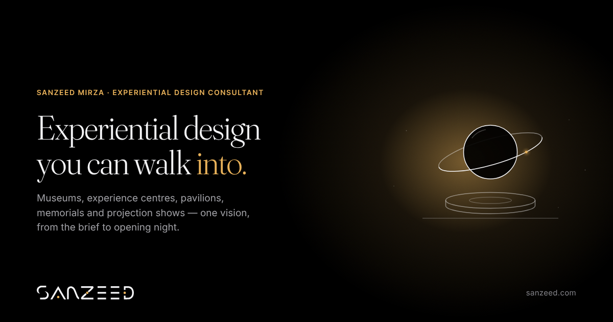

10:08

Sanzeed Mirzaonline

Sanzeed Mirza — Experiential Design ConsultantSanzeed Mirza — Experiential design you can walk into.sanzeed.com
Thank you — looks like exactly the room we have in mind.
Message
Link preview in chatog-home 1200 × 630, og:title and description from the site · 07_WEBSITE_DIGITAL_ASSETS / Open_Graph